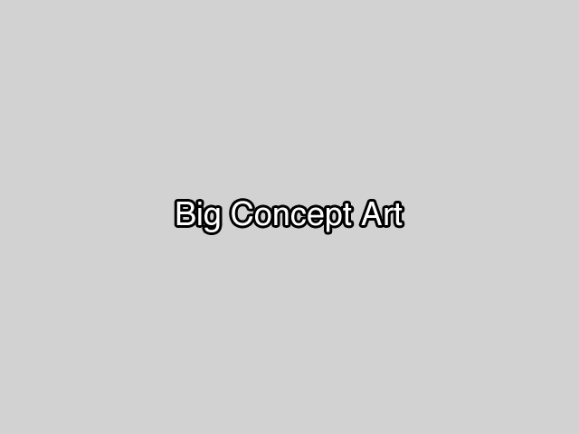

Levers are simple on and off switches. They should be no more than half the size of the hero, which gives them enough size to be easily seen and meaningfully manipulated, but not so large as to dwarf the player. {Game: theVerbingNoun} is not set in sophisticated times, so the lever is not overly complex mechanically.
Visual Look
There are two basic kinds of levers, which are used in two of the geographical locations in the game: wooden and frozen.

Motion
The player is not a weakling, but using devices in the world should not feel like they lack resistance. To the hero, using this lever is about as exerting as pushing a heavy rock over a hill or picking up a heavy box. An initial struggle to get going, but then smooth follow through to the end. Additionally, the player can interact with a lever in two ways: pushing, or pulling. This is necessary so that the player can easily "flip the switch on an off without having to constantly run around to the other side.
Sound
It is primarily a wooden made device, but with metal clasps and parts that would creak and bang together. The kind of sounds you would hear as you were locking a catapult into firing position. Clicking sounds, with a final clicking snap of it locking into place.
Effects
For the winter version it will have a layer of hoarfrost built up on it that gets broken when first used.